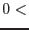

| Parameter | Mand | Type | Default | Constraints |
| set | yes | dataset | |
Name of the image dataset to plot.
|
| device | no | string | /xs | |
PGPLOT device, e.g. /GIF /CPS (colour Postscript) or /XW (X-windows). These are not case-sensitive.
|
| gridstyle | no | string | ticks | ticks|grid|none |
Style of grid overlay.
|
| imagestyle | no | string | image | image|contour |
Whether to draw a colour-coded image or a contour plot.
|
| zscaletype | no | string | linear | linear|log|sqrt |
The image transfer function.
|
| colourmap | no | integer | 7 | -2 to 7 |
Colour scale: -2=reverse-rainbow, -1=reverse-greyscale, 1=grey, 2=rainbow, 3=heat,
4=IRAF, 5=AIPS, 6=TJP, 7=Rainbow+white (default).
|
| contourstyle | no | string | number | number|separation |
Style of calculation of the contour separation.
|
| ncontours | no | integer | 5 | ncontours 1 1 |
Number of contours (valid if contourstyle=`number').
|
| contourseparation | no | real | 0.2 | contourseparation0 |
Separation of contours as a fraction of the distance between maximum and minimum (clipped) values of the image (valid if contourstyle=`separation').
|
| withzclip | no | boolean | yes | |
Truncate brightest and faintest pixels?
|
| zhistolo | no | real | 0.0 |  zhistolo zhistolo |
Active only if withzclip=yes. The pixels are ordered in order of increasing brightness; the minimum image brightness is then defined to be that value such that only zhistolo (as a fraction of the total number) of the pixels are fainter than this. Fainter pixels are then set to equal this lower limiting value.
|
| zhistohi | no | real | 0.999 | zhistohi |
Active only if withzclip=yes. The pixels are ordered in order of increasing brightness; the maximum image brightness is then defined to be that value such that zhistohi (as a fraction of the total number) of the pixels are fainter than this. Brighter pixels are then set to equal this upper limiting value.
|
| trimborder | no | boolean | yes | |
Trim any blank (ie, zero- or null-valued) border from the displayed image?
|
| withframe | no | boolean | yes | |
Include the frame plus anciliary information to the side.
|
| withxyclip | no | boolean | no | |
Display only a part of the image?
|
| xfraclo | no | real | 0.0 | xfraclo |
Active only if withxyclip=yes. Suppose the size of the image in the x-direction (after any blank border has been removed) is  pixels. Only that part of the image starting at pixel xfraclo is displayed. Note that xfraclo must be smaller than xfrachi. pixels. Only that part of the image starting at pixel xfraclo is displayed. Note that xfraclo must be smaller than xfrachi.
|
| xfrachi | no | real | 1.0 | xfrachi |
Active only if withxyclip=yes. Suppose the size of the image in the x-direction (after any blank border has been removed) is pixels. Only that part of the image ending at pixel xfrachi is displayed. Note that xfraclo must be smaller than xfrachi.
|
| yfraclo | no | real | 0.0 | yfraclo |
Active only if withxyclip=yes. Suppose the size of the image in the y-direction (after any blank border has been removed) is  pixels. Only that part of the image starting at pixel yfraclo pixels. Only that part of the image starting at pixel yfraclo is displayed. Note that yfraclo must be smaller than yfrachi. is displayed. Note that yfraclo must be smaller than yfrachi.
|
| yfrachi | no | real | 1.0 | yfrachi |
Active only if withxyclip=yes. Suppose the size of the image in the y-direction (after any blank border has been removed) is pixels. Only that part of the image ending at pixel yfrachi is displayed. Note that yfraclo must be smaller than yfrachi.
|
| withsrclisttab | no | boolean | yes | |
Plot circles around source positions?
|
| srclisttab | no | table | srclist.ds:SRCLIST |
Name of the dataset+table containing the source list. Note that the name should be in two parts, separated by a colon, these comprising the name of the dataset followed by the name of the table. If the colon + table name is omitted, the first table in the dataset is used.
|
| expression | no | string | | |
Source selection expression, possibly involving column names, keyword values or constants. See selectlib
for the grammar. Only those sources for which the expression evaluates to TRUE are plotted. The default (an empty expression) is TRUE for all sources.
|
| thickness | no | integer | 1 |  thickness thickness |
The line thickness to use for source circles and label text.
|
| srccolour | no | integer | 7 |  srccolour srccolour |
Colour index of the plotted circle and associated label text.
|
| withncut | no | boolean | no | |
withncut = `yes' should be used if the user wishes to plot only a certain definite number of sources from the (filtered) source list. This number should then be supplied via parameter ncut. Note however that such a specification of the maximum number of sources to plot implies that the list of sources is ordered according to some rule. This ordering is accomplished by defining a function via the parameters ncutsortstyle and ncutsortexpression. The sources are sorted in increasing order of their value of this function and only the first ncut from the resulting sequence are plotted.
|
| ncut | no | integer | 30 | ncut |
Maximum number of sources to plot. This parameter has no effect when withncut = `no'.
|
| ncutsortstyle | yes | string | `expr' | radiusup|radiusdown|expr|rownumber |
This parameter controls how the source list is sorted before being truncated at number ncut. See the description of this parameter in subsection 3.4 but, briefly: if ncutsortstyle = `expr', the task evaluates ncutsortexpression, sorts the sources in increasing order of the result, then plots only the first ncut of them.
|
| ncutsortexpression | yes | string | | |
If ncutsortstyle = `expr', the task evaluates ncutsortexpression and sorts the sources in increasing order of the result. The parameter ncut is then read and only the first ncut sources are plotted.
|
| radiusstyle | no | string | user | expr|psf|user |
This parameter controls how the radii of the source circles are scaled. If radiusstyle=`psf', an ellipse is plotted about each source that represents the locus at which the intensity of the source's Point Spread Function (PSF) is equal to the background level. If radiusstyle=`expr', the expression (involving in general keywords, column names etc) found in radiusexpression is evaluated and the radii scaled from that. See subsection 3.5.
|
| userradius | no | real | 5.0 | userradius |
When radiusstyle=`user', the present parameter is read and its value (in units of image pixels) is used for all source circle radii.
|
| radiusexpression | yes | string | | |
This parameter specifies an arithmetical expression, possibly involving column names, keyword values or constants. The result is used to scale the radii of the plotted circles. The parameter is read when radiusstyle=`expr'.
|
| withellipse | no | boolean | no | |
If radiusstyle=`psf', specifies that sources should be indicated by an elliptical locus. Otherwise a circle with radius equal to the larger semiradius of the ellipse is used.
|
| bkgfraction | no | real | 1.0 | bkgfraction 0.0 |
If radiusstyle=`psf', an ellipse is generated at the locus at which the source counts per pixel (obtained from the column SCTS) equal bkgfraction times the background counts per pixel (obtained from the column BG_RATE).
|
| maxradius | no | real | 15.0 | maxradius |
The maximum radius (in image pixels) of the plotted circles.
|
| withlabels | no | boolean | no | |
If `yes', additional information is plotted to the right of the source markers. The source of this information is dictated by labelstyle.
|
| labelsize | no | real | 1.0 | labelsize |
The font size to use for labels.
|
| labelstyle | yes | string | expr | radiusup|radiusdown|expr|rownumber |
This parameter controls how source labels are assigned. See the description of this parameter in subsection 3.6.
|
| labelexpression | yes | string | | |
If labelstyle = `expr', the task evaluates labelexpression and uses the result as the source label text. The expression may be either an arithmetic expression of columns which has a numerical result, or the name of a single column which can also be string-valued. That is, string-valued columns are not permitted in arithmetic expressions in parameter labelexpression.
|
| addusersources | no | boolean | no | |
Plot additional sources at user-supplied positions?
|
| userras | yes | real list | | userras |
A list of Right Ascensions of the user-added sources. This and parameter userdecs are of type `angle' described in the param
task documentation.
|
| userdecs | yes | real list | | userdecs |
A list of Declinations of the user-added sources. This and parameter userras are of type `angle' described in the param
task documentation.
|
| userlabels | no | string list | | |
A list of label text strings for the user-added sources.
|
| usercolours | no | integer list | 2 | usercolours |
A list of colour indices for the user-added sources. These are defined as follows:
- 0: black.
- 1: white.
- 2: red.
- 3: green.
- 4: blue.
- 5: cyan.
- 6: purple.
- 7: yellow.
|
| tempset | no | string | tempset.ds | |
Name of a temporary data set.
|
| Parameter | Mand | Type | Default | Constraints |